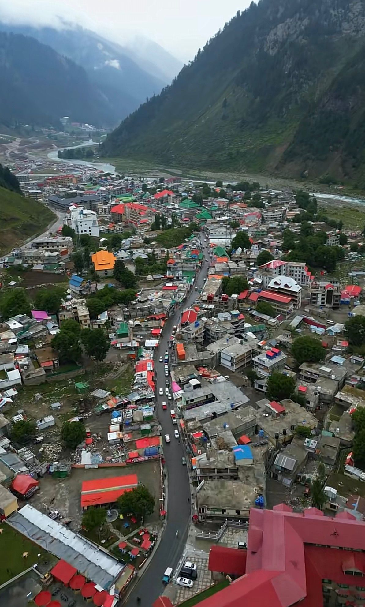
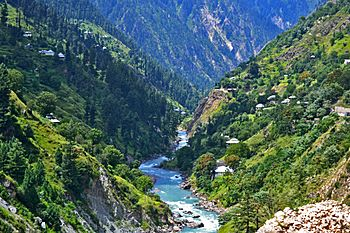
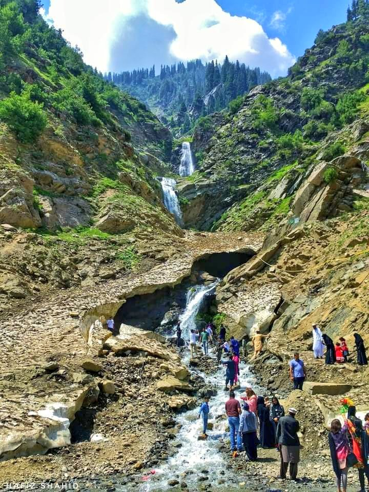
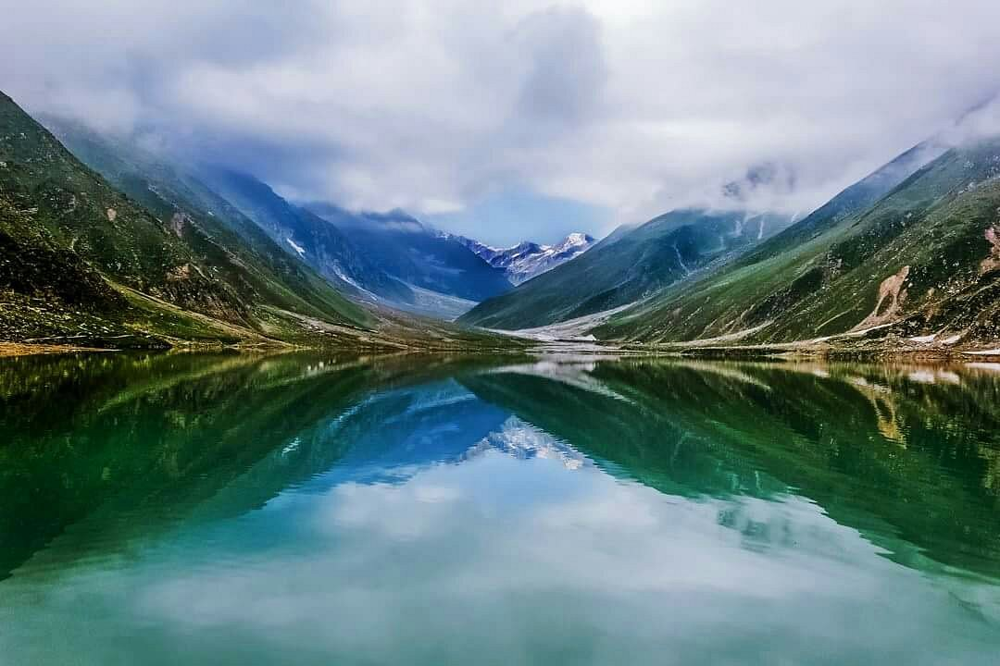
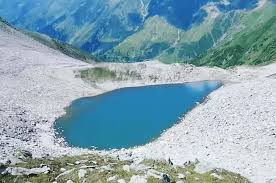
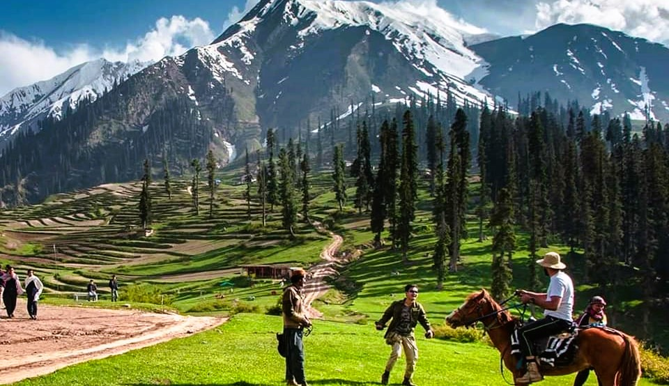
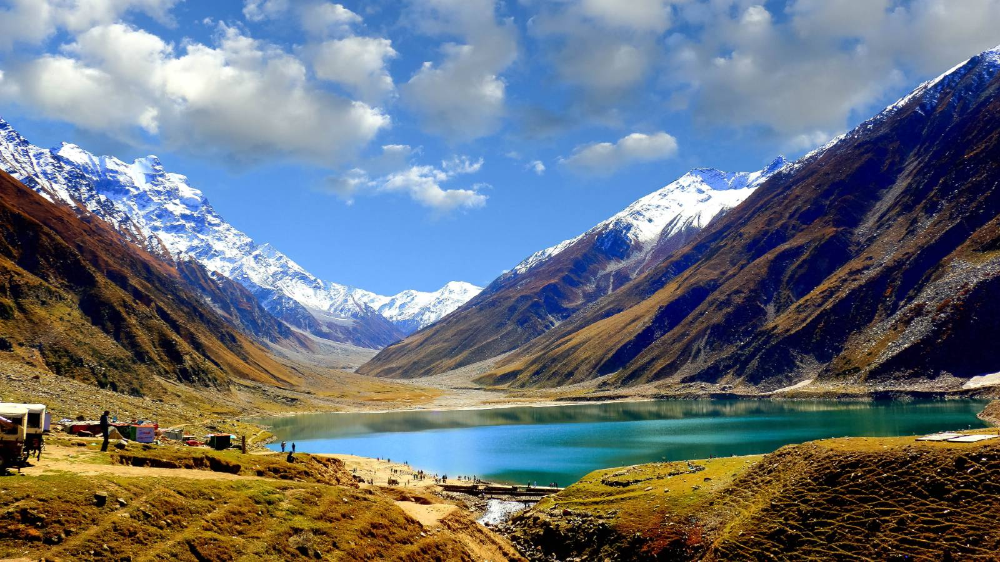
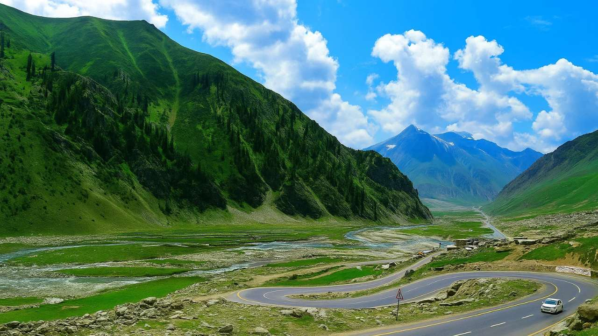

0 km
Local market with food, souvenirs, and culture.

0 km
Crystal clear river flowing through Naran.

8 km
Beautiful waterfall surrounded by nature.

9 km
Famous turquoise lake with mountain views.

16 km
Famous trekking destination.

21 km
Green meadows and mountain views.

48 km
Deep blue alpine lake.

65 km
High mountain pass with views.